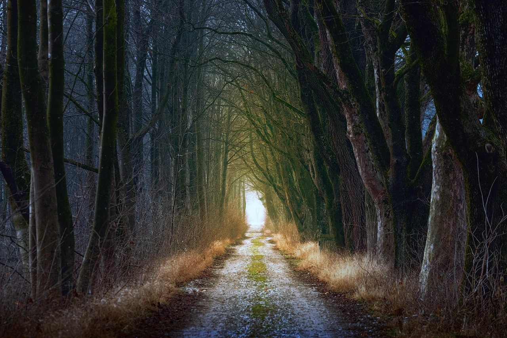

bird, beautiful, elegant
romantic path
Fototour Natur – Verborgene Wildnis durch die Linse
Entdecke die stille Kraft der Natur bei unserer besonderen Fototour: Zwischen moosbedeckten Pfaden, verwachsenen Mauern und wuchernden Gärten zeigt sich die Natur von ihrer eindrucksvollsten Seite. Diese Tour führt dich an Orte, an denen sich die Natur alte Strukturen zurückerobert – wild, mystisch, einzigartig.
Termine: Wöchentlich – immer samstags und sonntags
Dauer: ca. 3–4 Stunden
Das erwartet dich:
Geführte Fototour: Mit einem erfahrenen Guide erkundest du ungewöhnliche Naturschauplätze mit ausreichend Zeit zum Fotografieren.
Verlassene Naturorte: Alte Gärten, überwucherte Treppen, Natur im Dialog mit Architektur – spannende Motive garantiert.
Für alle Erfahrungsstufen: Egal ob Einsteiger mit Smartphone oder erfahrener Fotograf mit Spiegelreflexkamera – hier zählt der Blick für das Besondere.
Austausch & Inspiration: Gemeinsam mit Gleichgesinnten neue Perspektiven entdecken und kreative Impulse sammeln.
Hinweis: Die Tour findet bei jedem Wetter statt – denn gerade Regen, Nebel oder tief stehendes Licht sorgen für besonders stimmungsvolle Aufnahmen.
Unser Treffen
Zoom
bird, beautiful, elegant
romantic path
Fototour Natur – Verborgene Wildnis durch die Linse
Entdecke die stille Kraft der Natur bei unserer besonderen Fototour: Zwischen moosbedeckten Pfaden, verwachsenen Mauern und wuchernden Gärten zeigt sich die Natur von ihrer eindrucksvollsten Seite.
Diese Tour führt dich an Orte, an denen sich die Natur alte Strukturen zurückerobert – wild, mystisch, einzigartig.
Ort: Hannover
Termine: Wöchentlich, immer samstags und sonntags
Dauer: ca. 3–4 Stunden
Das erwartet dich:
Geführte Fototour: Mit einem erfahrenen Guide erkundest du ungewöhnliche Naturschauplätze mit ausreichend Zeit zum Fotografieren.
Verlassene Naturorte: Alte Gärten, überwucherte Treppen, Natur im Dialog mit Architektur – spannende Motive garantiert.
Für alle Erfahrungsstufen: Egal ob Einsteiger mit Smartphone oder erfahrener Fotograf mit Spiegelreflexkamera – hier zählt der Blick für das Besondere.
Austausch & Inspiration: Gemeinsam mit Gleichgesinnten neue Perspektiven entdecken und kreative Impulse sammeln.
Hinweis: Die Tour findet bei jedem Wetter statt – denn gerade Regen, Nebel oder tief stehendes Licht sorgen für besonders stimmungsvolle Aufnahmen.
Unser Treffen
Zoom